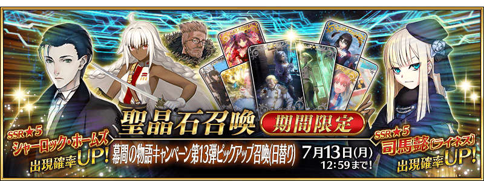
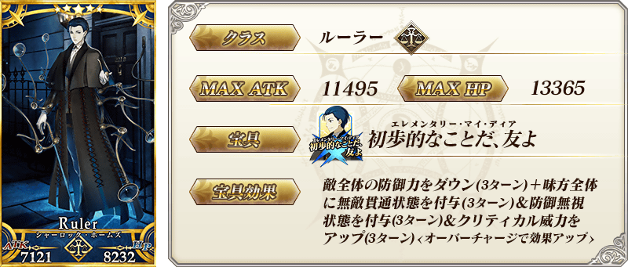
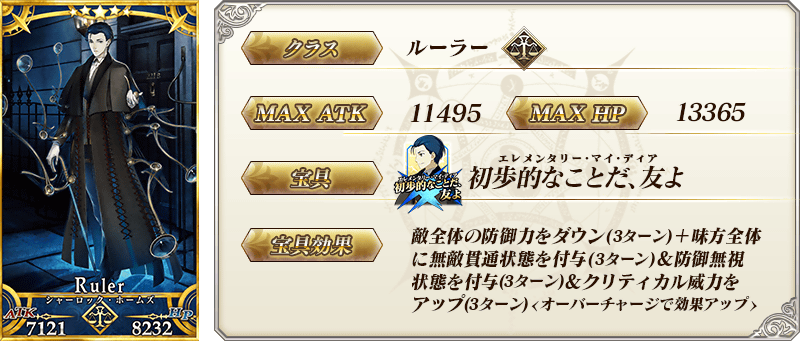
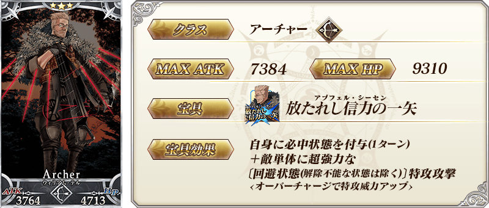
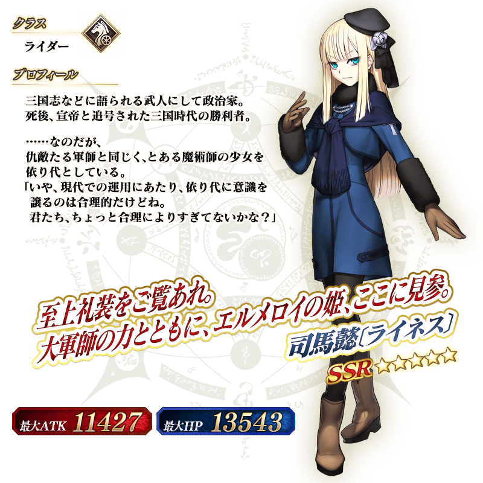
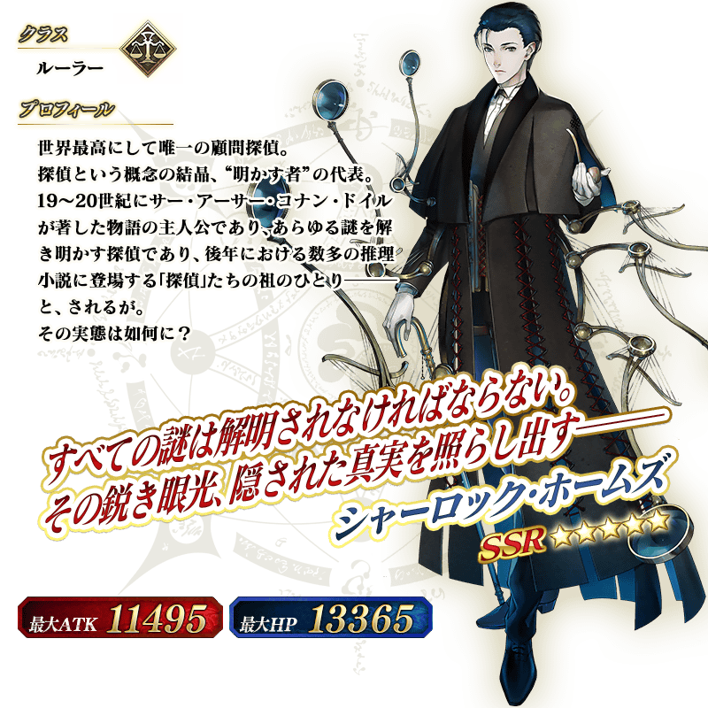
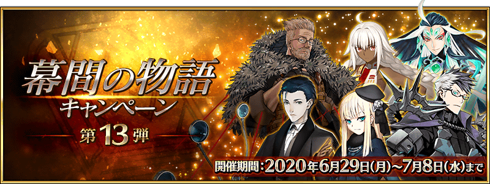

◆「幕間物語宣傳活動第13彈Pick Up召喚(每日交替)」期間◆
期間:2020年6月29日(一) 17:00～7月13日(一) 11:59
期間限定「幕間物語宣傳活動第13彈Pick Up召喚(每日交替)」舉辦！
本次從「幕間物語宣傳活動 第13彈」關聯的從者之中，下述的期間限定從者以每日交替Pick Up！ ・★5(SSR)司馬懿〔萊涅絲〕 ・★5(SSR)夏洛克・福爾摩斯
另外，下述的從者常駐Pick Up！ ・★4(SR)拉克什米・芭伊 ・★3(R)威廉・泰爾
Pick Up期間中，Pick Up對象從者的出現機率提升！
詳情請在聖晶石召喚畫面左下的召喚詳細確認。
11次召喚中確定1張★4(SR)以上和確定1位★3(R)以上的從者！ ※確定★4(SR)以上包含從者和概念禮裝。
◆有關從者的注意◆
※請注意本召喚做為每日交替，下述的從者就算舉辦期間中也有不會被抽出來的日子。
・★5(SSR)司馬懿〔萊涅絲〕
・★5(SSR)夏洛克・福爾摩斯
※下述的從者在Pick Up期間結束後不會追加到故事召喚。
・★5(SSR)司馬懿〔萊涅絲〕
・★5(SSR)夏洛克・福爾摩斯
※下述的從者在Pick Up期間結束後仍會在故事召喚被抽出。
・★4(SR)拉克什米・芭伊
・★3(R)威廉・泰爾
◆「幕間物語宣傳活動第13彈Pick Up召喚(每日交替)」Pick Up內容◆
| Pick Up期間 | Pick Up內容 | |
|---|---|---|
| 每日交替Pick Up | 全天Pick Up | |
| 6/29(一) 17:00～ 6/30(二) 22:59 |
★5 司馬懿〔萊涅絲〕 ★5 夏洛克・福爾摩斯 |
★4 拉克什米・芭伊 ★3 威廉・泰爾 |
| 6/30(二) 23:00～ 7/2(四) 22:59 |
★5 司馬懿〔萊涅絲〕 | |
| 7/2(四) 23:00～ 7/4(六) 22:59 |
★5 夏洛克・福爾摩斯 | |
| 7/4(六) 23:00～ 7/6(一) 22:59 |
★5 司馬懿〔萊涅絲〕 ★5 夏洛克・福爾摩斯 |
|
| 7/6(一) 23:00～ 7/8(三) 22:59 |
★5 司馬懿〔萊涅絲〕 | |
| 7/8(三) 23:00～ 7/10(五) 22:59 |
★5 夏洛克・福爾摩斯 | |
| 7/10(五) 23:00～ 7/13(一) 11:59 |
★5 司馬懿〔萊涅絲〕 ★5 夏洛克・福爾摩斯 |
|
※請注意會以每日交替變更Pick Up的從者。


 
※上述「★5(SSR)夏洛克・福爾摩斯」的卡面為靈基再臨第2階段。

※上述「★5(SSR)夏洛克・福爾摩斯」的卡面為靈基再臨第2階段。


 ※上述「★3(R)威廉・泰爾」的卡面為靈基再臨第2階段。

 ※上述「★5(SSR)夏洛克・福爾摩斯」的立繪為靈基再臨第2階段。
介紹在本召喚Pick Up的3位從者寶具演出！
在「Fate/Grand Order」官方網站內的公告中，以影片公開寶具演出，敬請確認。確認。
【★5(SSR)司馬懿〔萊涅絲〕】
【★5(SSR)夏洛克・福爾摩斯】
【★4(SR)拉克什米・芭伊】
其他還有，「幕間物語宣傳活動 第13彈」同時舉辦！
關於詳情，請自下述橫幅確認。
■「幕間物語宣傳活動 第13彈」詳細情報 